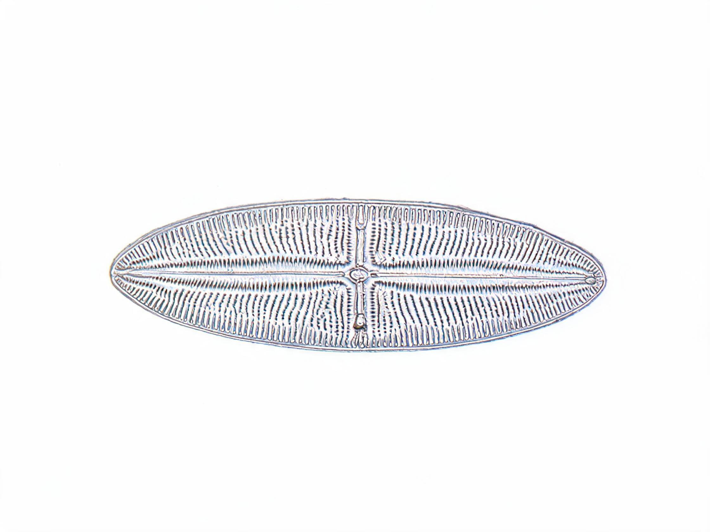
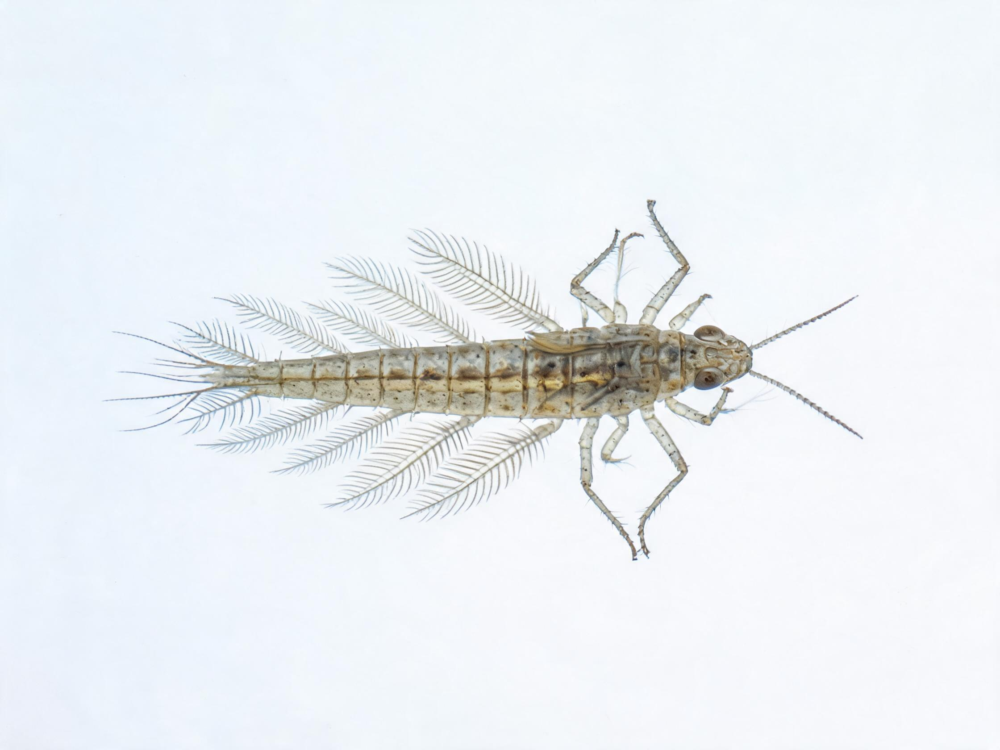
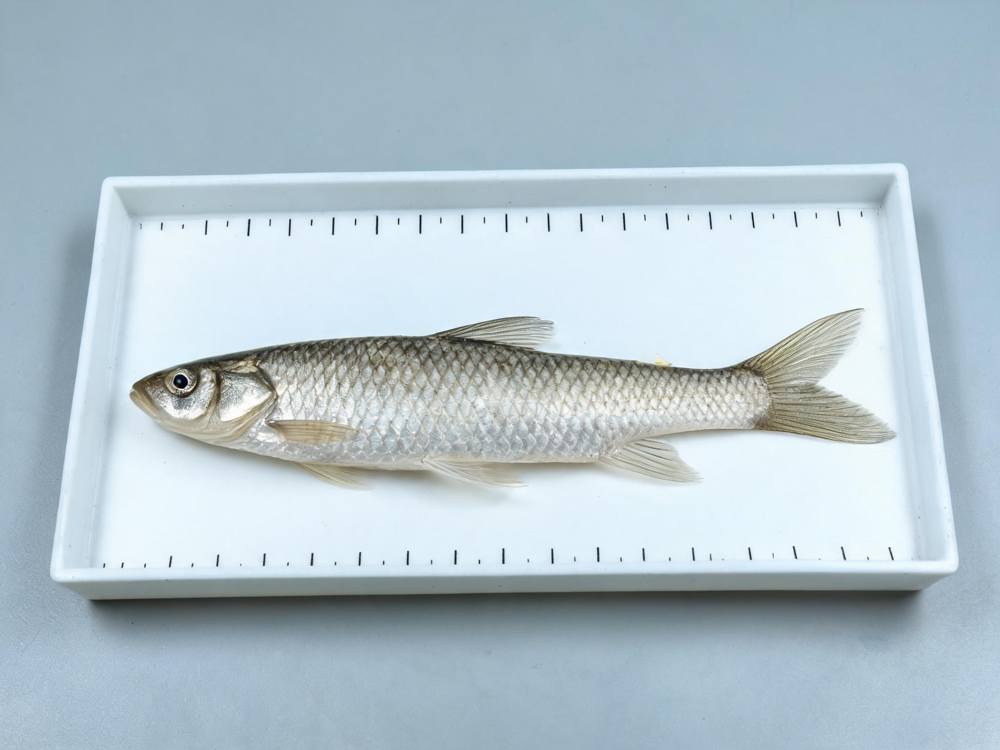
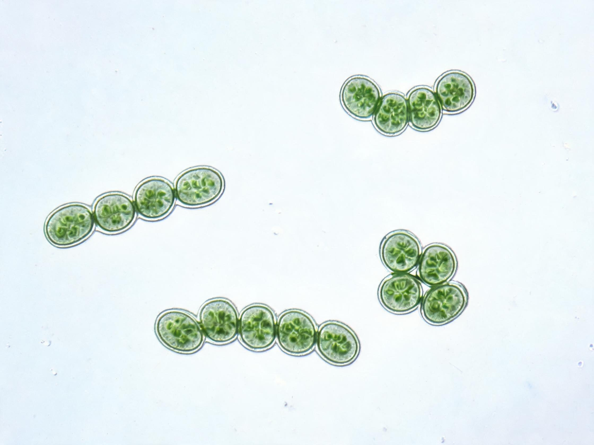

鉴定台总览
2026-09-08
本月鉴定样品
1,247
+12.3%
AI 置信度均值
87.3%
较上月持平
专家复核待办
23
待处理
参考库覆盖
1,042 种
+47
鉴定任务进度
全部任务
| 样品编号 | 类型 | 采集站点 | AI 预测 | 置信度 | 状态 | 操作 |
|---|---|---|---|---|---|---|
| GL-2026-0947 | 底栖无脊椎 | 信阳浉河 | 四节蜉属 (Baetis) | 92.1% | 已完成 | 查看 |
| GL-2026-0946 | 硅藻 | 南湾水库 | 桥弯藻属 (Cymbella) | 85.7% | 已完成 | 查看 |
| GL-2026-0945 | 浮游植物 | 狮河区段 | 微囊藻 (Microcystis) | 78.3% | 待复核 | 复核 |
| GL-2026-0944 | 鱼类 eDNA | 淮河干流 | 麦穗鱼 (Pseudorasbora) | 91.5% | 已完成 | 查看 |
| GL-2026-0943 | 底栖无脊椎 | 信阳浉河 | 网脉蜉属 | 64.2% | 待复核 | 复核 |
| GL-2026-0948 | 底栖无脊椎 | 丹江口水库 | 纹石蛾属 (Hydropsyche) | 88.6% | 已完成 | 查看 |
| GL-2026-0949 | 鱼类 eDNA | 丹江口水库 | 鲤 (Cyprinus) | 93.2% | 已完成 | 查看 |
| GL-2026-0950 | 浮游植物 | 小浪底水库 | 颤藻 (Oscillatoria) | 76.5% | 待复核 | 复核 |
| GL-2026-0951 | 硅藻 | 小浪底水库 | 舟形藻 (Navicula) | 87.3% | 已完成 | 查看 |
| GL-2026-0952 | 底栖无脊椎 | 黄河郑州段 | 纹石蛾属 (Hydropsyche) | 71.8% | 待复核 | 复核 |
| GL-2026-0953 | 鱼类 eDNA | 黄河郑州段 | 鲤 (Cyprinus) | 89.7% | 已完成 | 查看 |
| GL-2026-0954 | 底栖无脊椎 | 海河河南段 | 摇蚊属 (Chironomus) | 82.4% | 已完成 | 查看 |
| GL-2026-0955 | 浮游植物 | 海河河南段 | 微囊藻 (Microcystis) | 68.7% | 待复核 | 复核 |
AI 置信度分布
按生物类型 · 近30天
标本图库
全部标本

桥弯藻 (Cymbella)
2026-09-06 · 南湾水库

四节蜉 (Baetis)
2026-09-05 · 信阳浉河

麦穗鱼 (Pseudorasbora)
2026-09-04 · 淮河干流

微囊藻 (Microcystis)
2026-09-07 · 狮河区段
最近活动
模型微调完成 — 底栖识别模型 v2.3.1
2小时前
专家复核提交 — 张研究员确认 3 条待复核
5小时前
参考库更新 — 新增 47 条硅藻 16S 序列
昨天
报告导出 — 9月浉河水质月报已生成
2天前
丹江口水库 9月批次样品接收 — 48 份
3小时前
小浪底水库浮游植物鉴定完成 — 颤藻占比 62%
6小时前
黄河郑州段 eDNA 检出鲤科 5 种 — 含外来种 1 种
昨天
海河河南段 BI=8.3 — 生态预警：中度污染
2天前